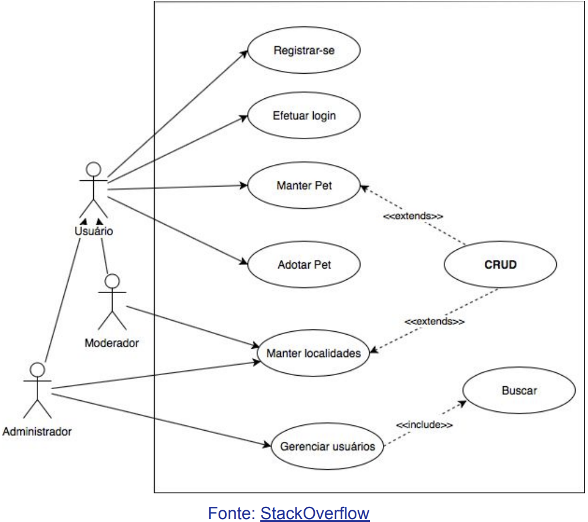
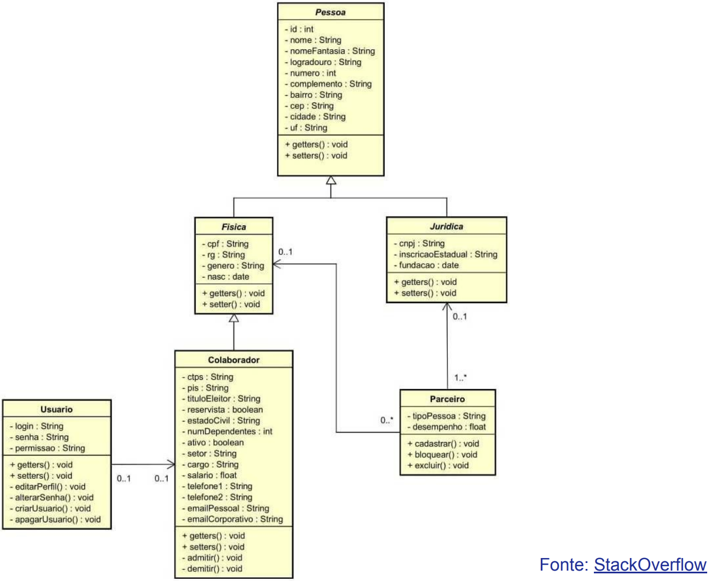
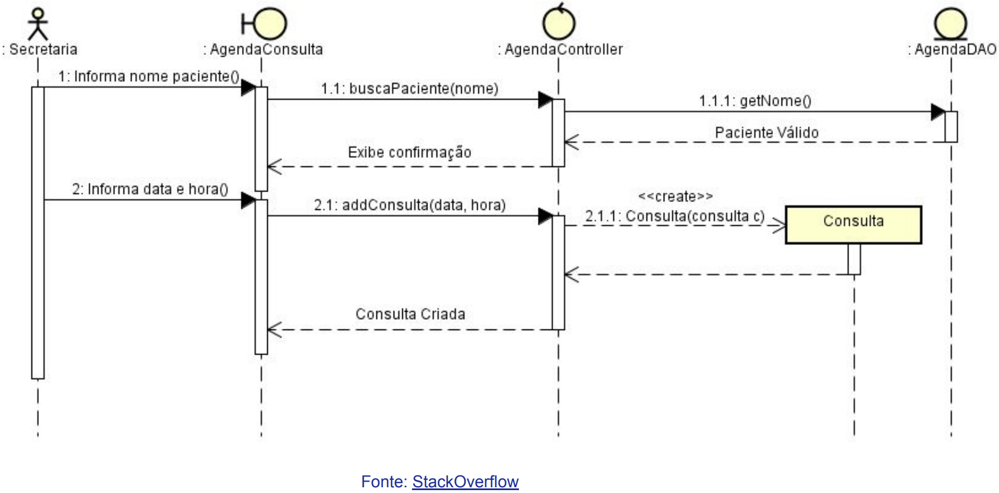

Disciplinas
SISTEMAS DE INFORMAÇÃO Concluído
Materiais
Vídeo 1 - [UFMS Digital] Sistemas de Informação - Módulo 4 - Unidade 2 - Análise, projeto e avaliação de sistemas de informação sendProf° ministrante: Awdren de Lima Fontão
Análise de Requisitos
Definição de Análise de Requisitos:- Compreensão do processo de identificação, documentação e validação das necessidades dos usuários e do negócio.
- Destaque para a fase crucial no desenvolvimento de sistemas que influencia diretamente o sucesso do projeto.
- Métodos para coletar informações junto aos stakeholders, como entrevistas, questionários e observação.
- Requisitos funcionais e não funcionais, incluindo requisitos de usuário, sistema e de qualidade.
- Técnicas para documentar requisitos de forma clara e precisa, como casos de uso, protótipos e diagramas.
- Estratégias para verificar a integridade e consistência dos requisitos, envolvendo revisões, validação cruzada e feedback dos stakeholders.
Requisitos funcionais e não-funcionais
Requisito Funcional:- Descrição: A aplicação deve permitir que os usuários adicionem itens ao carrinho de compras.
- Justificativa: Isso é fundamental para a funcionalidade básica da aplicação pois permite que os usuários selecionem os produtos desejados para compra.
- Desempenho: A aplicação deve carregar as páginas principais em menos de 3 segundos, garantindo uma experiência de usuário ágil.
- Justificativa: O desempenho rápido é crucial para manter os usuários engajados e proporcionar uma experiência eficiente durante a navegação na aplicação.
Modelagem de Sistemas
Definição de Modelagem de Sistemas:- Representar visualmente a estrutura e o funcionamento de um sistema por meio de diferentes diagramas e técnicas.
- Destaque para a clareza na comunicação entre desenvolvedores e stakeholders;
- Facilitação na compreensão e visualização do sistema antes da implementação.
- Diagramas de casos de uso, diagramas de classe, diagramas de sequência e fluxogramas.
- Exploração dessa ferramenta para representar interações entre usuários e o sistema, identificando funcionalidades principais.
- Representação das classes e suas relações, contribuindo para a definição da estrutura do sistema.
- Utilização desse diagrama para visualizar a interação entre objetos em diferentes cenários.
Diagrama de Casos de Uso

Diagrama de Classes

Diagrama de Sequência

Metodologias de desenvolvimento
Metodologias de desenvolvimento são abordagens sistemáticas que fornecem diretrizes e estrutura para o processo de criação de sistemas de informação.
Elas ajudam a organizar e gerenciar as etapas do desenvolvimento desde a concepção até a implementação e manutenção do sistema.
Modelo em cascata
O Modelo em Cascata é uma abordagem linear e sequencial de desenvolvimento de software, em que as fases (como análise, design, implementação, testes e manutenção) são executadas de forma sequencial, com cada fase dependendo da conclusão da anterior.
Desenvolvimento ágil
É uma abordagem iterativa e incremental para o desenvolvimento de software. Valoriza a colaboração contínua entre equipes multifuncionais, adaptação a mudanças frequentes nos requisitos e entrega incremental de software funcional.
Modelo V
É uma extensão do modelo em cascata, na qual as fases de teste são correspondentes às fases de desenvolvimento.
Destaca a relação entre cada fase de desenvolvimento e uma fase de teste correspondente, a fim de garantir que cada componente seja testado de maneira adequada.
Lean Development
Aplica os princípios lean, originalmente derivados da produção enxuta, ao desenvolvimento de software.
Isso envolve a eliminação de desperdícios, otimização de fluxos de trabalho e foco na entrega de valor ao cliente de maneira eficiente.
Como escolher a metodologia?
- Considere fatores como:
- complexidade do projeto;
- requisitos específicos do negócio;
- preferências da equipe, e
- capacidade de se adaptar a mudanças ao longo do tempo.
- A escolha adequada é crucial para o sucesso do projeto.
Avaliação de Sistemas
Avaliação de Sistemas de Informação refere-se ao processo sistemático de avaliar a eficácia, eficiência, segurança, usabilidade e impacto geral dos sistemas de informação em um ambiente organizacional.
Visa garantir que os sistemas de informação atendam aos objetivos organizacionais, proporcionando valor significativo, qualidade e alinhamento com as necessidades dos usuários.
Métricas de desempenho
Métricas, como tempo de resposta, tempo de inatividade, taxa de erros e eficiência operacional, são utilizadas para mensurar o desempenho e a eficácia dos sistemas de informação.
Avaliação de segurança
Avaliação da integridade, confidencialidade e disponibilidade dos dados nos sistemas, garantindo que medidas de segurança sejam eficazes contra ameaças cibernéticas.
Experiência do usuário (UX) e usabilidade
Avaliação da facilidade de uso, eficiência e satisfação do usuário ao interagir com o sistema, visado proporcionar uma experiência positiva.
Avaliação e melhoria contínua
A avaliação de sistemas ocorre ao longo do ciclo de vida do sistema, desde a concepção até a desativação, para garantir que ele permaneça alinhado aos objetivos organizacionais, em constante evolução;
O processo de avaliação não é estático, é contínuo. A identificação de áreas de melhoria contínua visa aprimorar constantemente o desempenho e a eficácia dos sistemas de informação.